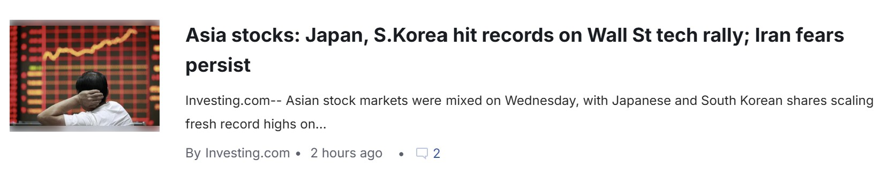
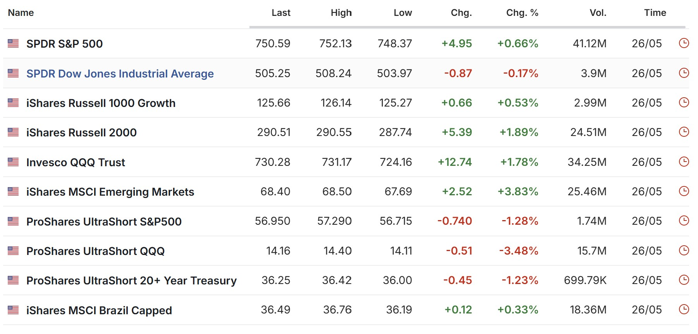
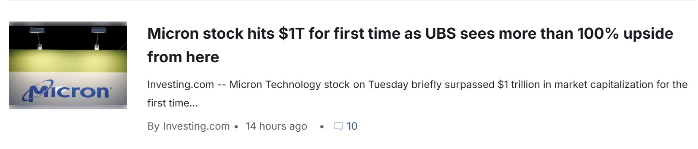
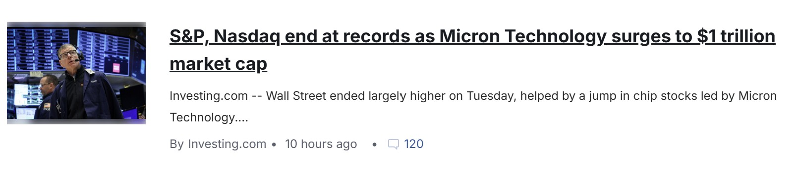

Asia stocks, Japan and Korea hit records
아시아 증시와 일본, 한국 시장이 기술주 랠리의 영향을 받아 강세를 보였다는 내용의 기사입니다.
원문 보기

아시아 증시와 일본, 한국 시장이 기술주 랠리의 영향을 받아 강세를 보였다는 내용의 기사입니다.
원문 보기
UBS가 마이크론의 추가 상승 가능성을 언급하면서 반도체 관련 주식 흐름이 주목받은 기사입니다.
원문 보기
중동 긴장 완화 기대와 유가 하락 흐름 속에서 미국 주가지수 선물이 상승했다는 내용입니다.
원문 보기